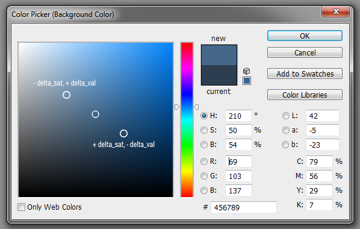

First of all you can change default settins of the script by correcting variables values at the top of it. Please open for ex. svgavatars.core.min.js file from upload/svgavatars/js/ folder in your editor.
From v1.3 "Save" button and "SVG" download option are disabled by default. If you need them please simply change corresponding variables values to "false". Also there are some new variables.
There you will see the following code:
//Global options
var path_to_folder = '/svgavatars/',//the path to main SVG Avatars folder from root dir of your site. The slashes "/" are important!
delta_sat = 0.1, //the step of saturation color change in HSV (HSB) mode (10% by default)
delta_val = 0.06, //the step of value (brightness) color change in HSV (HSB) mode (6% by default)
save_format = 'png', //must be exactly 'png' or 'svg' for storing on a server
save_size = 200, //the dimentions for avatar stored on a server (pixels)
svg_download_size = 600, //the conditional dimentions of SVG file when download by user (pixels)
png_one_download_size = 200, //the dimentions of first option PNG file when download by user (pixels)
png_two_download_size = 400, //the dimentions of second option PNG file when download by user (pixels)
png_ios_download_size = 500, //the dimentions of PNG file when download by user on iOS devices (pixels)
png_win8tablet_download_size = 400, //the dimentions of PNG file when download by user on Win8 phones and tablets (pixels)
gravatar_size = 200,//the dimentions of PNG file for Gravatar service (pixels)
hide_save = true, //true will disable save on your server option
hide_svg_download_on_Android = true, //true will disable download SVG option on Android devices (not useful)
hide_svg_download = true, //true will disable download SVG option
hide_png_one_download = false, //true will disable download PNG with first dimensions
hide_png_two_download = false, //true will disable download PNG with second dimensions
hide_gravatar = false, //true will disable the possibility to install created avatar as gravatar
color_theme = 'dark'; //must be exactly 'light' or 'dark'
//Share options
var hide_share = false, //true will disable share option
share_image_size = 500, //the dimentions of PNG file for share with Social networks (pixels)
facebook_app_id = 'replace me!', //you must have an Facebook's App ID for correct work of share function (https://developers.facebook.com/apps)
facebook = true, //false will disable Facebook share option
twitter = true, //false will disable Twitter share option
pinterest = true, //false will disable Pinterest share option
googleplus = true, //false will disable Google Plus share option
share_link = document.URL, //will be an URL of a HTML page where the generator is placed
share_title = document.title, //will be the title tag of a HTML page where the generator is placed
share_description = '', //if you leave it blank, it might be taken from your meta description tag
share_credit = 'Created on YourSite.com';//replase YourSite.com with yours or leave it blank (do NOT delete variable itself!), if you don't want a watermark on avatar for Social share
First please look on the comments above and here is some more explanations:
- path_to_folder - the path to svgAvatars from root dir of your site. For example, you upload the script to this folder - www.yoursite.com/upload/svgavatars/. In that case this value must be /upload/svgavatars/. The slashes "/" are IMPORTANT!
- delta_sat and delta_val are used for calculating shadows and hightlights of choosen colors in the script itself. The HSV (hue, saturation, value) model is used for this process. Please look at this picture:

The higher value of delta_sat and delta_val - the more contrast will be implemented. You can play with this settings, but please don't set very high values.
- save_format. If you wish, the script can save users' created avatars on your server in the ready-avatars folder. You can organize a store of the links of these files in your database with corresponding to your registered user names. Note: This functional needs additional PHP code, which is NOT included in this pack. You need to write and add it by yourself in upload/svgavatars/php/save-ready-avatar.php file.
The value of save_format specifies the format of a saved file (must be exactly 'png' or 'svg'). Note: SVG can be simply used in img HTML tag. For ex. <img src="ready-avatars/some-generated-name.svg" alt="Username here">. All modern browsers work correctly with that.
- save_size, svg_download_size, png_one_download_size, png_two_download_size and gravatar_size set the dimentions of files for saving on your server, downloading by your visitors and uploading to gravatar.com.
- png_ios_download_size specifies PNG file dimentions for iOS (Retina). Note: iOS doesn't allow force download dynamically created avatars in Safari browser. So special functionality was prepared for such devices, when user gets a file converted from SVG to PNG in a modal box, after that he/she needs to tap and hold that image and choose Save.
- png_win8tablet_download_size sets PNG file dimentions for mobile devices (not desktop) which working under Windows 8. Like for iOS your visitors gets a file converted from SVG to PNG in a modal box, after that he/she needs to tap and hold that image and choose Save.
- hide... variables let you disable unnecessary options in your opinion. One note: if you set all hide_download_... to true the whole "download" menu item will be disabled
- color_theme - must be "dark" or "light". You can easy change colors by modifing section at the end of upload/svgavatars/css/svgavatars.css file. Also in a source code file you can find one more value - custom. It's for WordPress plugin only and doesn't take affect in this pack.
- Special note about share functionality
- Ready avatar may be shared as image on Facebook and Pinterest only. Twitter doesn't allow share images at all. Google Plus needs a static image which it can grab from HTML code on your page. Due to dynamic nature of generated avatars it's not possible.
- You must have your unique Facebook App ID for share function works. You can register your site and get an App ID in Developers section here
- After creating new App you will see App ID field, copy that value to facebook_app_id variable.
- After that on Facebook App page click Settings, then +AddPlatform, choose Website in modal box and fill Site URL field. Then click Save Changes. If you will not specify your site URL an error might occur when your visitors will try to share an avatar.
- Special note about uploading to gravatar.com
For correct work of uploading of created avatars to secure.gravatar.com you must have PHP cURL extension is enabled on your server (please check phpinfo() or contact your hosting provider). See PHP: cURL - Manual for more information.
- From v1.3 SVG Avatars Generator comes with seven localized files: English, German, Spanish, French, Italian, Portuguese and Russian. Please upload only the one you prefer. Also you can correct the translation or modify it to suit your needs before uploading.